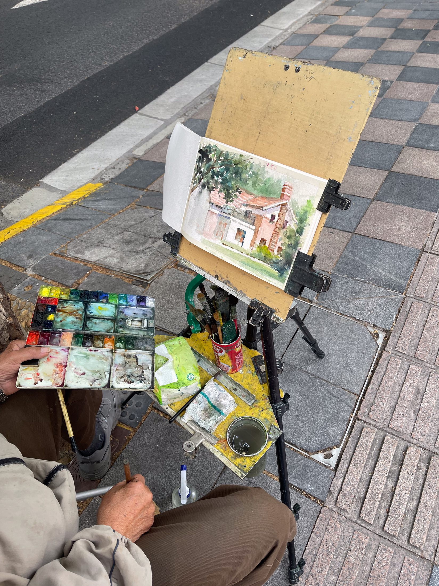
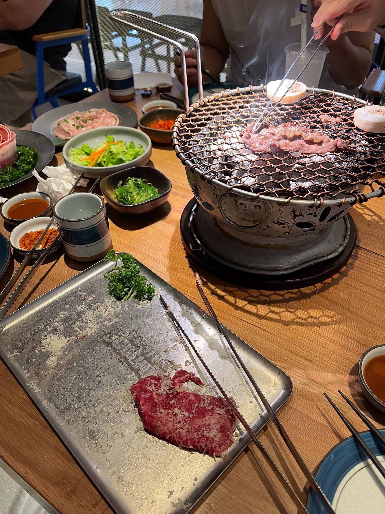

旅行
上海行记
前言
该怎么组织游记的文字呢？
该怎么组织游记的文字呢？以往总是按照时间顺序，事无巨细地记录下来，希望让以后的自己重读时，能重新捡起当时的回忆。
可若每次都这般去写，记录的琐事太多，相应地花费的时间也会较多。
因此，这次改换一种形式，用主题分类的方法，将游记重新组合一下，不知完成时会有怎样的效果。
正式提笔已是归来后的一个星期了，写的都算是回忆，而非当天鲜活的记叙了。
不过这样也好，沉淀下来的会是旅行的核心，那些不重要的，忘记也就罢了。
初到上海
精确到秒的上海地铁
从虹桥火车站出来，走不远就是地铁站。
从虹桥到预订的普陀区民宿，大约有 45 分钟的路程——30 分钟地铁，15 分钟骑行。
毕竟是火车站，地铁上等车的人大多带着行李，我也成了其中之一。这次，是以旅客的身份来见识上海。
地铁的环境和杭州类似，外部整体整洁，车厢内也一样。注意到一个有趣的不同点：这里的等候显示屏上的时间，以“秒”为最小单位。

车厢里两小孩的国际象棋对局
当我坐在地铁座位上时，看到对面一位大人带着两个刚上完兴趣班的小孩回家。那两个年纪尚小、猜测刚上小学不久的孩子，居然手里拿着一副国际象棋棋盘。
棋子能很好地吸附在棋盘上，因此不受地铁晃动的影响。
两个小孩装出一副认真思考的样子，每次吃掉对方棋子前，都会看一眼对方的脸色，试图判断对方是否有诈。


黄浦江夜骑 8 km
不知是何时染上了骑行这个爱好，相比其他交通工具，有时骑行才是自己心目中认识一座城市的最好方式。
夜晚的九点半我就在二楼的甲板等待，看着身旁和我一样的游客越来越多，直等到十点，船才从码头出发，耗时十分钟便停靠于江边了。
下了船，在附近找了辆共享单车，骑行才正式宣告开始。
与外滩的打卡点不同，江的另一边游客稀少，偶尔能见到晚上出来跑步锻炼的本地居民。
随着骑行的深入，江边的夜景也慢慢地发生变化：夜晚的霓虹灯逐渐黯淡下来，城市的热闹也渐渐离我远去，待我张望四周，何时我已孤单成了一人。


独自漫步之愚园路
独自漫步于陌生城市的魅力在于，这里没有一个人认识自己，自己便更容易穿梭在人群中，仿佛随时都能变成另一个人。
在这短短的时间里，我带着最强的好奇心，拿起放大镜，观察着上海愚园路的热闹街道。
我看到琳琅满目的精致小店，它们并排坐落在人行道两旁，常常用艺术画作和绿色藤蔓作为装饰。
当然，最令我印象深刻的，是在逛完礼品店后遇到的“画像的老人们”。


偶遇法国人天主教洗礼
可刚骑了不到几百米，我的目光被一座教堂所吸引。
我跟着进到内部，沿路没有受到阻拦，看来今天的确是对外开放的。
台上有位穿着豹纹裙饰的女士，在步道的讲台边，对着麦克风轻声歌唱。
左侧有一对模样看上去是父子的人，父亲吹着乐器大号，孩子吹着小号。
洗礼正式开始。高亢的嗓音，洋溢着幸福的微笑，光是听这位女士歌唱，我已觉得不虚此行了。


外滩打卡的失落
终于走到外滩，上了台阶。只见以上海东方明珠为中心，灯火辉煌的建筑群熠熠生辉，缤纷的霓虹灯在黑暗的江水中投下了倒影。
游客几乎占满了整个通道，都挤在围栏旁拿着相机或手机拍照。
我们一行人也懒得加入拥挤的行列，只是看了两眼，就离开了。
总体来看，逛个外滩好像只留下了失落这一个感觉：毕竟是充当一个外地打卡者，和周围的游客们没有任何区别，只是被建筑的外观吸引，却对其中一无所知。


与上海出租车司机的闲聊
每次到一个地方旅行，最容易搭上话的，就是当地的出租车司机师傅了。
绝大部分情况下，面对游客时，他们相对活跃；而作为游客的我，也能从他们口中了解当地的生活。
在整个搭车的二十分钟里，师傅一刻不停地分享他的见闻和观点，我负责随声附和，鼓励他说下去就好。
车开到了此前骑车望见的卢浦大桥。夜深了，江边的城市迎来沉睡。